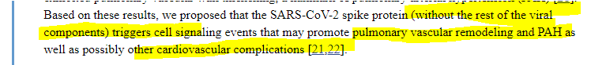

Empiezan a salir estudios con los daños que provocan las vacunas ARN
New peer reviewed study on COVID-19 vaccines suggests why heart inflammation, blood clots and other dangerous side effects occur - ON Point with Alex Pierson - Omny.fm
Audio en ingles, donde Alex Briddle, profesor de inmunología viral, detalla los efectos de las vacunas de ARN según recientes estudios muy recientes publicados y 'peer reviewed'.No tengo los estudios pero está trabajando en hacer un documento recopilatorio.
En inglis pero resumo.El virus tiene una proteina en su superficie, la llamada 'spike protein' que es con lo que infecta.Las vacunas de ARN utilizan estas spike protein para crear la respuesta inmune.Lo que se ha descubierto es que todos los problemas de trombos y demás vienen provocados por la spike protein si llega a la sangre.
En pruebas en animales les inyectan las spike protein en vena y les crean todo tipo de problemas cardiovasculares, incluso cruzando la barrera hematoencefálica y dejándolos moñecos.
Lo que pensaban es que como la inyección te la ponen en el brazo no llega al torrente sanguineo como sucede con las vacunas tradicionales.
Lo que han descubierto es que sí que llega a la sangre, circula durante varios días y se va acumulando en los órganos como riñones y en altas concentraciones en los ovarios.La vacuna provoca trombos, problemas de corazón, daño neurológico, esterilidad.Además de concentrarse peligrosamente en la leche materna, que provoca a los bebés serios problemas gastrointestinales.
Estudio japonés sobre Pzifer en ensayos con animales, que detalla lo que relata el investigador.versión traducida al inglés https://files.catbox.moe/0vwcmj.pdf
Extracto de estudio relacionado.Recordemos que lo que usan las vacunas de ARN es la spike protein.SARS-CoV-2 Spike Protein Elicits Cell Signaling in Human Host Cells: Implications for Possible Consequences of COVID-19 Vaccines

Posted On: 2021-06-02T00:00:00
Posted By: TibioSocialDemócrata
TibioSocialDemócrata dijo: New peer reviewed study on COVID-19 vaccines suggests why heart inflammation, blood clots and other dangerous side effects occur - ON Point with Alex Pierson - Omny.fm Audio en ingles, donde Alex Briddle, profesor de inmunología viral, detalla los efectos de las vacunas de ARN según recientes estudios muy recientes publicados y 'peer reviewed'.No tengo los estudios pero está trabajando en hacer un documento recopilatorio.En inglis pero resumo.El virus tiene una proteina en su superficie, la llamada 'spike protein' que es con lo que infecta.Las vacunas de ARN utilizan estas spike protein para crear la respuesta inmune.Lo que se ha descubierto es que todos los problemas de trombos y demás vienen provocados por la spike protein si llega a la sangre.En pruebas en animales les inyectan las spike protein en vena y les crean todo tipo de problemas cardiovasculares, incluso cruzando la barrera hematoencefálica y dejándolos moñecos.Lo que pensaban es que como la inyección te la ponen en el brazo no llega al torrente sanguineo como sucede con las vacunas tradicionales.Lo que han descubierto es que sí que llega a la sangre, circula durante varios días y se va acumulando en los órganos como riñones y en altas concentraciones en los ovarios.La vacuna provoca trombos, problemas de corazón, daño neurológico, esterilidad.Además de concentrarse peligrosamente en la leche materna, que provoca a los bebés serios problemas gastrointestinales.Hacer clic para expandir...
Claro, claro..
Juas jjas
Que grandes biólogos moleculares ha perdido el mundo con vosotros.. y pensar que estas desperdiciando la vida como pizzeros.. porca miseria !
Posted On: 2021-06-02T00:00:00
Posted By: Breakeven
Pues ya han tardado con el estudio.
Casi más que lo que han tardado en desarrollar y sacar la cacuna a la calle.
Posted On: 2021-06-02T00:00:00
Posted By: Chiruja
Pero poned el enlace al.estudio, no a la noticia
Posted On: 2021-06-02T00:00:00
Posted By: stiff upper lip
stiff upper lip dijo: Pero poned el enlace al.estudio, no a la noticia
Habla de más de un estudio, el más relevante que menciona es un estudio japonés sobre pfizer que estaba guardado en algún cajón.Está preparando un documento con una recopilación de todo.
versión traducida al inglés https://files.catbox.moe/0vwcmj.pdf
Posted On: 2021-06-02T00:00:00
Posted By: TibioSocialDemócrata
No se podía saber.
Posted On: 2021-06-03T00:00:00
Posted By: LetalFantasy
Up.
Posted On: 2021-06-03T00:00:00
Posted By: lukashenko
Edito primer post añadiendo esto.
Extracto de estudio relacionado.Recordemos que lo que usan las vacunas de ARN es la spike protein.SARS-CoV-2 Spike Protein Elicits Cell Signaling in Human Host Cells: Implications for Possible Consequences of COVID-19 Vaccines
Posted On: 2021-06-03T00:00:00
Posted By: TibioSocialDemócrata
Content Date: 2021-06-02
Download Date: 2021-09-16
Document ID: L0C04G7LU